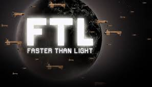
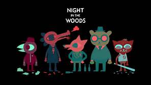
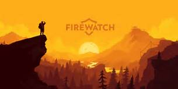
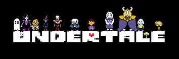

The Short Game features over 100 fantastic episodes, each covering a game or topic that is surely worth your time. But with so many episodes, it can be hard to decide where to start! Here are five of Nate's favorites, in no particular order.
FTL: Faster Than Light
About the game:
This "spaceship simulation roguelike-like" allows you to take your ship and crew on an adventure through a randomly generated galaxy filled with glory and bitter defeat. Maybe the best game we've ever covered.
Listen to the podcast!FTL Official Site
Night in the Woods
About the game:
Night in the Woods is an story-focused adventure game that follows college dropout Mae Borowski as she comes home to distressed mining town Possum Springs and tries to reconnect with her family and friends. It's a wonderfully written and animated story with tons of variety in the gameplay. Also, everyone is a talking animal.
Listen to the podcast!Night in the Woods Official Site
SUPERHOT
About the game:
Superhot is a first person shooter where time only moves when you do. That's the elevator pitch that launched the original version of Superhot from a 2013 7 Day FPS game jam contender to an internet darling and Kickstarter success. Three(ish) years later, the full game is out on Steam and Xbox One. Does its clever but simple premise stand up as a larger game? Yes. Yes it does.
Listen to the podcast!Superhot Official Site
Firewatch
About the game:
Firewatch is a narrative first-person mystery game set in a the Wyoming wilderness. It blends the storytelling of "walking simulators" like Gone Home with the narrative dialogue of Telltale adventure gamesgames (and indeed it is written by Sean Vanaman, the writer of Telltale's Walking Dead.)
Listen to the podcast!Firewatch Official Site
Undertale
About the game:
Described as "the RPG where you don't have to destroy anyone," Undertale turned out to be one of the sweetest, funniest, and ultimately most moving games we've played.
Listen to the podcast!Undertale Official Site